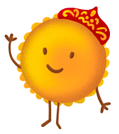

Пироги
народов России
народов России
Кто мы?
Наш дружок Пирожок
Егор и Лера – молодые пирожковые энтузиасты,
студенты второго курса дизайна НИУ ВШЭ , а точнее,
UX/UI и фронтенд разработки.
студенты второго курса дизайна НИУ ВШЭ , а точнее,
UX/UI и фронтенд разработки.
Пирожок – весёлый пирог и ваш
проводник в мир культуры русских
народов и, в особенности, их пирогов!
Он любит узнавать новое и делиться
этим со своими друзьями, поэтому
он будет делиться с вами всеми
интересностями, которые найдёт.
проводник в мир культуры русских
народов и, в особенности, их пирогов!
Он любит узнавать новое и делиться
этим со своими друзьями, поэтому
он будет делиться с вами всеми
интересностями, которые найдёт.
Проект «Пироги народов России» – это медиа, которе освещает культуру
народов
с необычного пирожкового ракурса, совмещая приятный процесс приготовления
и поедания пирогов с изучением традиций и особенностей разных народов.
с необычного пирожкового ракурса, совмещая приятный процесс приготовления
и поедания пирогов с изучением традиций и особенностей разных народов.

Культура
С одной стороны , мы расскажем
про историю и культурное наследие
регионов и народов России.
Вы узнаете интересные факты
и традиции, о которых ранее не слышали!
про историю и культурное наследие
регионов и народов России.
Вы узнаете интересные факты
и традиции, о которых ранее не слышали!

Пироги
С другой стороны, мы покажем
рецепты традиционных пирогов,
которые можно приготовить
самостоятельно и прикоснуться
к культурам разных народов!
рецепты традиционных пирогов,
которые можно приготовить
самостоятельно и прикоснуться
к культурам разных народов!